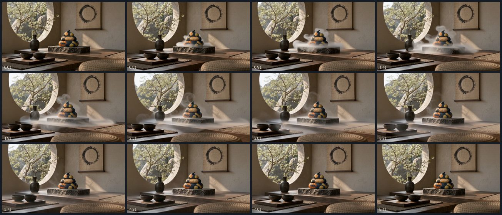

zen loop / 919
縦長の静止画1枚を左右へ伸ばして16:9にし、そこから継ぎ目のないループを作る。カメラは三脚に据えたまま、動くものだけが動く。
波と雲だけが動く／石は動かない
玄武岩の柱と、積まれた石。寄せて返す波のあいだ、石だけが5秒前とまったく同じ場所にいる。
差し戻し（見せる状態になっていない）
やり直し注文は「外の緑だけがそよぐ。ほかは完全に止まったまま」でした。実物は頼んでいない白い靄が部屋じゅうを流れ、 止まっているはずの石・畳・壁の掛軸まで、その靄に覆われて明るさが変わります。 実測: 石の平均の明るさ 99.5 → 124.6（先頭コマ→31コマ目）。動くはずのない掛軸の時間方向の標準偏差 17.91 に対し、 動いてよい窓の緑は 33.64 ——止まっているべきものが、緑の半分以上動いています。先頭コマとの差も中盤で最大 58.72（海岸は 36.49）。 直すには茶室1本の作り直し（約30円）が要ります。承認済みの72円は使い切っているので、まだ手を付けていません。

上：12コマを時間順に並べたもの。左上が最初、右下が最後。中盤（1段目の右・2段目）で白い靄が部屋を横切っている。
原寸1920×1080のmp4を開く